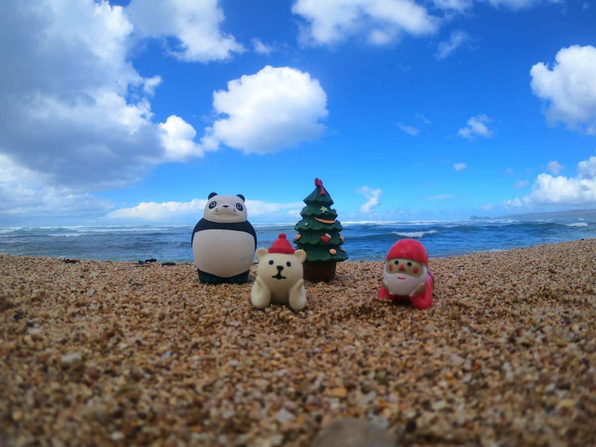
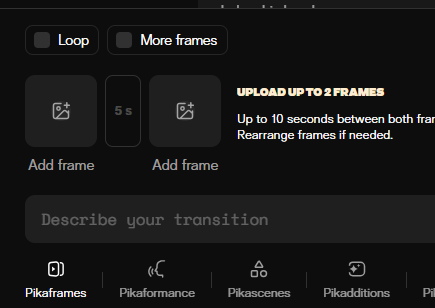

Vol.05 / Self-Produced Special
自作パペット・アニメ：
「旅先」の偶然性とAI動画生成（PIKA）の融合
2025.12.24 UP

◎ 作品の評価：アンビエント・コマ撮りの新機軸
本作は、管理されたスタジオを脱し、旅先という「制御不能なフィールド」で敢行された意欲作です。自然光の移ろいや風による背景の揺らぎは、従来のストップモーションが排除してきた「ノイズ」ですが、本作ではそれを積極的な演出として昇華。計算されたライティングでは到達できない、その瞬間だけの「実在感」をパペットに宿らせた点が高く評価されます。
◎ 作者：移動するクリエイターによる「記憶の定着」
日常の風景を自作パペットというフィルターを通して再定義する。旅先での撮影は、アニメーター自身の記憶とパペットの物質的実存を同期させるプロセスです。限られた機材という制約が「今、ここでしか撮れない動き」を引き出し、ライブ感溢れる独創的な制作スタイルを提示しています。
◎ 技術：PIKAによる潜伏空間の動的補完（Interpolation）
本作の技術的ハイライトは、後半パートにおける動画生成AI「PIKA」の導入です。静止画2枚をキーフレームとして配置し、その間の欠落した時間をAIの潜伏空間（Latent Space）によって補完。 従来のコマ撮りが持つ「ジッター（カクつき）」とは異なる、流体的なメタモルフォーゼを実現しました。アナログなパペット操演と最新のニューラルネットワーク技術が、一つのカットの中で見事に衝突・融合しています。
◎ 今後の予定：ネオ・ストップモーションの拡張
今後は、AIによる「動画生成」だけでなく、撮影時の「フレーム補完」や「ウェザリングのテクスチャ生成」にもAIを積極的に活用する予定です。個人制作の機動力を最大化させながら、既存のスタジオクオリティを凌駕する映像密度を目指す実験を継続します。
🎬 Scenes & Process Archive

【Scene 01】旅先の自然光を活かした実在感の追求

【Process】静止画2枚の間をAIが生成するハイブリッドワークフロー
【マニアック解説】
後半のAIパートへの切り替わりは、パペットの「物質性」が「デジタルな記憶」へと溶け出す瞬間のようです。旅先の具体的な風景から、AIによる抽象的な動きへと変容することで、鑑賞者は作品を「事実の記録」から「主観的な追体験」へと誘われます。これは、PIKAというツールの特性を単なる効率化ではなく、物語の「深度」を深めるための詩的なデバイスとして転換した非常に高度な試みです。
🔍 Animeda! 視点：AIは「不気味な谷」を超えて、魂の隣へ
今回の自作作品を通して、AIは「手作業を奪う敵」ではなく、「パペットの可能性を拡張する翼」であることが証明されました。旅先でシャッターを切る。その一回性の重みをAIが引き伸ばしていくこの手法は、予算や人数の制限を言い訳にしない、新しい時代の「個人作家の武器」になるはずです。